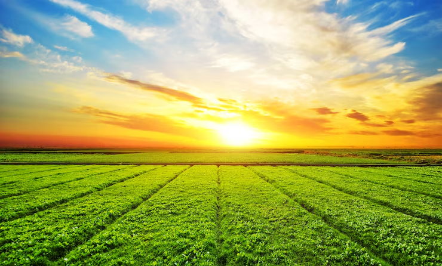

Sobre a Conexão
A conexão entre o campo e a cidade simboliza um elo fundamental para o desenvolvimento equilibrado da sociedade. Essa integração promove a troca de saberes, fortalece economias locais e valoriza a diversidade cultural e produtiva de cada região.
Benefícios da Integração
Educação
Troca de experiências entre saberes tradicionais e conhecimentos urbanos.
Economia
Incentivo ao consumo de produtos locais e geração de renda para pequenos produtores.
Cultura
Valorização da identidade rural e fortalecimento dos laços comunitários.
Galeria



Entre em Contato
Tem interesse em saber mais ou participar de ações que unem campo e cidade? Envie uma mensagem para nós!